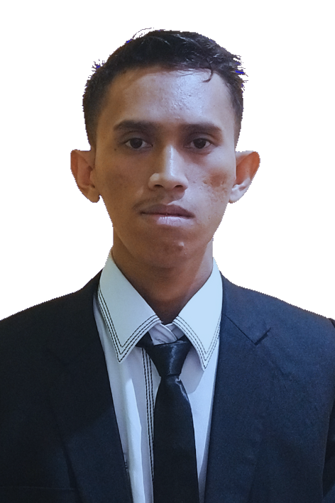

Jaringan & Infrastruktur
- Instalasi FTTH / fiber optic
- Splicing & OTDR testing
- Konfigurasi ONT, router, switch
- Network troubleshooting onsite
- Instalasi CCTV
Terbuka untuk peluang kerja & proyek
IT Support · Jaringan · Telematika — Surabaya
Saya Abdul Samad, Magister Teknik Elektro — Telematika ITS Surabaya, awardee Beasiswa S2 Kominfo 2024–2026 (IPK 3.68). Berangkat dari lapangan — memasang jaringan fiber optic ICONNET by PLN — hingga menata administrasi perkara di firma hukum, dengan sertifikasi BNSP dan Digitalent Kominfo.

Karier saya dimulai dari lapangan. Sebagai teknisi pemasangan jaringan di PT Indonesia Comnets Plus (ICONNET by PLN), saya menarik kabel fiber optic ke rumah pelanggan, menyambungnya dengan teknik splicing, mengujinya dengan OTDR, dan memastikan ONT serta router terkonfigurasi benar sebelum berpamitan dari rumah pelanggan.
Dari lapangan, saya bergeser ke meja kerja digital: mengelola website dan publikasi konten di CV. Tauhid Production, membantu Panitera Pengadilan Negeri Pangkajene menyusun berita acara persidangan, hingga menangani arsip perkara dan korespondensi di Galang & Associates Law Office — semuanya sambil menyelesaikan kuliah Sistem Informasi di Universitas Teknologi AKBA Makassar.
Dua dunia itu — teknis lapangan dan administrasi digital — kini menjadi kekuatan utama saya: paham infrastruktur dari sisi kabel dan konfigurasi, sekaligus telaten mengelola dokumen, data, dan komunikasi. Pada 2024 saya terpilih sebagai awardee Beasiswa S2 Kominfo dan menyelesaikan S2 Teknik Elektro bidang Telematika di Program Magister Departemen Teknik Elektro, Fakultas Teknologi Elektro dan Informatika Cerdas, Institut Teknologi Sepuluh Nopember (ITS) Surabaya — lulus 2026 dengan IPK 3.68. Saat ini saya berdomisili di Surabaya dan terbuka untuk peran IT support, teknisi jaringan, telematika, maupun administrasi.
Tiga rumpun kemampuan yang saya bangun dari pekerjaan nyata — bukan sekadar daftar kata kunci.
Menjadi tulang punggung administrasi kantor hukum: mengarsipkan berkas perkara secara sistematis, menangani korespondensi termasuk email dan surat-menyurat, serta mengatur agenda para pengacara agar tidak ada jadwal yang terlewat.
Membantu Panitera menyusun berita acara persidangan dan mengelola disposisi, termasuk mendukung proses pembayaran konsinyasi ganti rugi proyek kereta api di wilayah hukum Pangkajene.
Menerbitkan artikel, berita, dan informasi terbaru; memastikan website tampil baik di berbagai perangkat; serta menangani kebutuhan administratif tim.
Memasang jaringan internet fiber optic (FTTH) di rumah pelanggan dan area komersial: penarikan kabel, penyambungan dengan splicing, pengujian OTDR, konfigurasi ONT/router/switch, sampai penanganan gangguan langsung di lokasi.
Menyusun rencana kerja, mengelola administrasi organisasi, dan melaporkan pelaksanaan program.
Mengelola media sosial organisasi dan memfasilitasi kegiatan belajar seputar IT.
Untuk wilayah Surabaya dan sekitarnya, atau jarak jauh untuk pekerjaan digital.
Pemasangan dan penataan jaringan internet rumah atau kantor, termasuk konfigurasi router.
Instalasi dan pengaturan CCTV untuk rumah maupun tempat usaha.
Pengelolaan konten WordPress: publikasi artikel, pembaruan rutin, dan penataan halaman.
Pengetikan, penataan arsip digital, dan pengolahan dokumen Microsoft Office.
Membuka peluang kerja, atau butuh jasa pemasangan jaringan & CCTV? Kirim pesan — saya balas secepatnya.